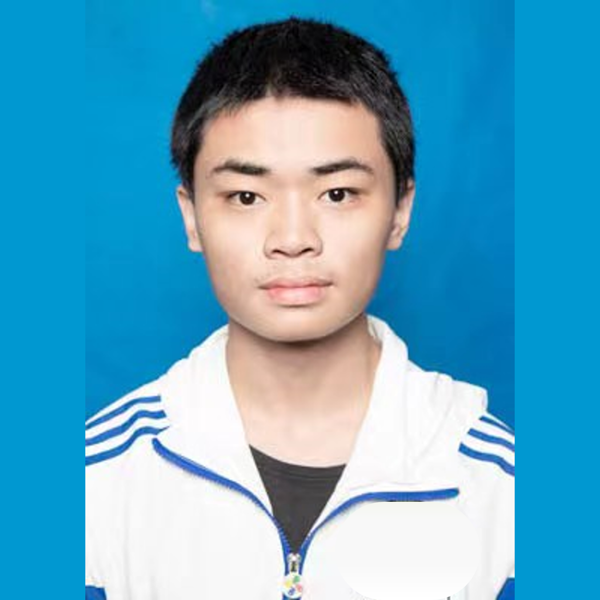

|
 |
Jiashun Ye 叶家顺
Undergraduate Student, Math & CS, SEU Address: Nanjing, China Email: 213220206@seu.edu.cn |
|
I am an undergraduate student majoring in Mathematics with a minor in Computer Science at
Southeast University.
My research interests include machine learning, computer vision, and mathematical optimization.
|
Education & Experience
Southeast University, B.S. in Mathematics, minor in Computer Science, 2020–2024 (to be confirmed)
To be added: Internship or work experience
Teaching
To be added: Online course title, Platform name, 2023.
Projects
To be added: Project Title, 2023
To be added: Project Description
Project link
To be added: Project Title, 2022
To be added: Project Description
Project link
Publications
|
To be added: Paper Title |
Competitions
2025.1 MathorCup数学应用挑战赛——大数据竞赛（第五届）本科生组 全国二等奖 [link]
2024.12 全国大学生数学竞赛（第十六届）数学A组 江苏赛区一等奖 [link]
2024.6 泰迪杯数据挖掘竞赛（第十二届）本科组 全国一等奖 [link]
2023.12 全国大学生数学竞赛（第十五届）数学A组 江苏赛区一等奖 [link]
External Links
Last updated: June 2024